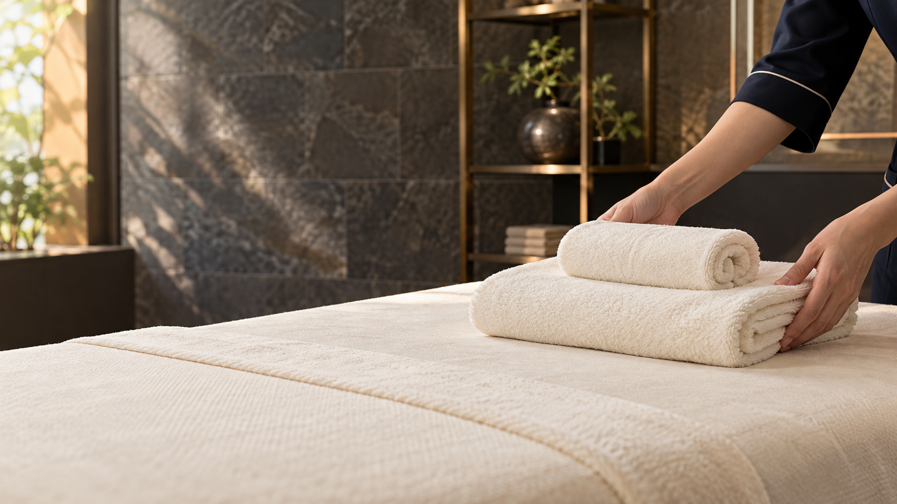

バストのシルエット・バストケアの明示 → サロン → 相談 → 準備 → ケア → 日常 → 店舗案内。参考2本目の、施術を落ち着いて見せる流れを取り入れました。
冒頭5秒で下着姿と「バストケア」を提示し、サロンのサービスだと続けて伝えます。「ふんわり」は目指すラインの表現で、施術後の柔らかさ・効果を保証するものではありません。相談C03・C04・C11はフェイシャル版C12の同じ画像で統一しています。追加の別角度素材は準備中です。施術パートはC06〜C09の17秒。いただいたデコルテ画像の全景と手元の寄りでつないでいます。別角度の新規生成は未完のため、同一画像の構図違いです。施術者の顔は映していません。実際の施術内容・効果を示す映像ではありません。
C01 · 0–5秒
バストケア｜Lien Unique1/5｜ふんわりを目指す、 バストケア。
バストケア｜Lien Unique1/5
ふんわりを目指す、バストケア。
箕面｜Lien Unique1/5
モデルによる演出イメージ
画・動作冒頭から受領したブラ姿の上半身を全面に見せ、「バストケア」を明示。柔らかな印象のバストラインを目指す訴求で、施術結果の保証・実例ではない。
画角・見せ方肩からウエストの上半身。左の余白にバストケア名とコピー。
声の台本ふんわりを目指す、バストケア。
テロップふんわりを目指す、
バストケア。
C02 · 5–9秒
ESTHETIC SALON｜リアンの バストケア。

箕面｜Lien Unique1/5
モデルによる演出イメージ
画・動作サロンの画とサービス名を続けて出し、下着販売ではなくサロンのバストケアの広告だと明示。
画角・見せ方サロンのワイド。
声の台本リアンの、バストケア。
テロップリアンの
バストケア。
C03 · 9–13秒
COUNSELING｜まずは、想いを 聞かせてください。

COUNSELING
まずは、想いを聞かせてください。
箕面｜Lien Unique1/5
モデルによる演出イメージ
画・動作フェイシャル版C12と同じ部屋・丸い大理石テーブル・椅子・スタッフ・主役の画像で相談する。
画角・見せ方会話の中景。
声の台本まずは、想いを聞かせてください。
テロップまずは、想いを
聞かせてください。
C04 · 13–16秒
COUNSELING｜気になることを、 ひとつずつ。
箕面｜Lien Unique1/5
モデルによる演出イメージ
画・動作フェイシャル版C12と同じ会話画像で、相談内容を一つずつ確認する。別室の手元画像は使用しない。
画角・見せ方同じ部屋の二人を含む中景。別角度素材の追加までは共通画像。
声の台本気になることを、ひとつずつ。
テロップ気になることを、
ひとつずつ。
C05 · 16–19秒
PREPARATION｜落ち着ける空間で。

箕面｜Lien Unique1/5
モデルによる演出イメージ
画・動作ベッドと清潔なタオルを準備する。相談からケアへの導入。
画角・見せ方ベッドとタオルの全景。
声の台本落ち着ける空間で。
テロップ落ち着ける空間で。
C06 · 19–23秒
バストケア｜バストのために、 自分をいたわる時間。

箕面｜Lien Unique1/5
施術構図案・実内容確認前
受領したデコルテケアの演出画像。実際の施術内容・手順は確認前です。同一画像の全景・寄りで構成しています。
画・動作受領した仰向けのデコルテケア画像。タオルと両手の位置を見せ、施術の状況を先に伝える。
画角・見せ方16:9全景。胸全体はタオルで覆う。
声の台本バストのために、自分をいたわる時間。
テロップバストのために、
自分をいたわる時間。
C07 · 23–27秒
バストケア｜丁寧なケアを、 一人ひとりに。
箕面｜Lien Unique1/5
施術構図案・実内容確認前
受領したデコルテケアの演出画像。実際の施術内容・手順は確認前です。同一画像の全景・寄りで構成しています。
画・動作同じ原画像から、鎖骨から肩に触れる手元へ寄る。別の手技を示すカットではない。
画角・見せ方原画像の1.18倍の寄り。施術者の顔なし。
声の台本丁寧なケアを、一人ひとりに。
テロップ丁寧なケアを、
一人ひとりに。
C08 · 27–32秒
バストケア｜目指したいのは、 ふんわりとしたライン。
箕面｜Lien Unique1/5
施術構図案・実内容確認前
受領したデコルテケアの演出画像。実際の施術内容・手順は確認前です。同一画像の全景・寄りで構成しています。
画・動作全景に戻して、タオルで覆った身体と両手をゆっくり見せる。サイズ変化は表現しない。
画角・見せ方画角を戻して5秒保持。
声の台本目指したいのは、ふんわりとしたライン。
テロップ目指したいのは、
ふんわりとしたライン。
C09 · 32–36秒
バストケア｜自分らしい美しさを、 大切に。
箕面｜Lien Unique1/5
施術構図案・実内容確認前
受領したデコルテケアの演出画像。実際の施術内容・手順は確認前です。同一画像の全景・寄りで構成しています。
画・動作同じケア画像の手元をもう一度見せ、余韻を作る。現在は同一静止画の画角違い。
画角・見せ方1.12倍の穏やかな寄り。映像化時は実手技の別カットに置換。
声の台本自分らしい美しさを、大切に。
テロップ自分らしい美しさを、
大切に。
C10 · 36–39秒
AFTER CARE｜ひと息つける時間を。
箕面｜Lien Unique1/5
モデルによる演出イメージ
画・動作ベッドと室内の静かなカットで施術パートを締める。
画角・見せ方空間のインサート。
声の台本ひと息つける時間を。
テロップひと息つける時間を。
C11 · 39–43秒
CONSULTATION｜通い方も、 気軽に相談。
箕面｜Lien Unique1/5
モデルによる演出イメージ
画・動作フェイシャル版C12と同じ相談場所・人物へ戻る。実在する体験談や効果の感想として扱わない。
画角・見せ方会話の中景。
声の台本通い方も、気軽に相談。
テロップ通い方も、
気軽に相談。
C12 · 43–47秒
FOR YOURSELF｜バストケアも、 私のために。
FOR YOURSELF
バストケアも、私のために。
箕面｜Lien Unique1/5
モデルによる演出イメージ
画・動作最初と同じ下着画像を再掲。施術前後の体型差は作らない。
画角・見せ方自然な上半身のシルエット。
声の台本バストケアも、私のために。
テロップバストケアも、
私のために。
C13 · 47–51秒
EVERYDAY｜好きな服を、 自分らしく。

箕面｜Lien Unique1/5
モデルによる演出イメージ
画・動作服を着て日常へ。目指す気持ちのイメージとして見せる。
画角・見せ方顔アップにせず装いの中景。
声の台本好きな服を、自分らしく。
テロップ好きな服を、
自分らしく。
C14 · 51–55秒
LIEN UNIQUE 1/5｜バストケアのご相談は、 リアンへ。
バストケアのご相談

Lien Unique
ESTHETIC SALON
1/5
メニュー・ご相談はこちら
箕面｜Lien Unique1/5
モデルによる演出イメージ
画・動作店名と相談案内で締める。未確定の料金・予約先は入れない。
画角・見せ方サロンのワイド。
声の台本バストケアのご相談は、リアンへ。
テロップバストケアのご相談は、
リアンへ。